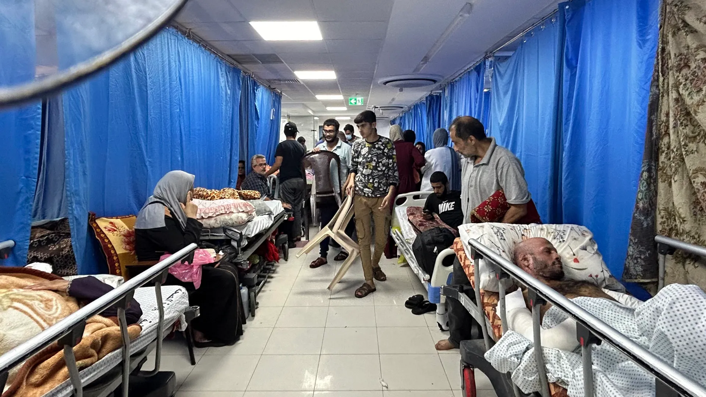
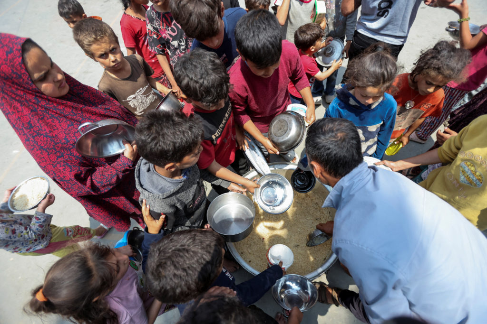
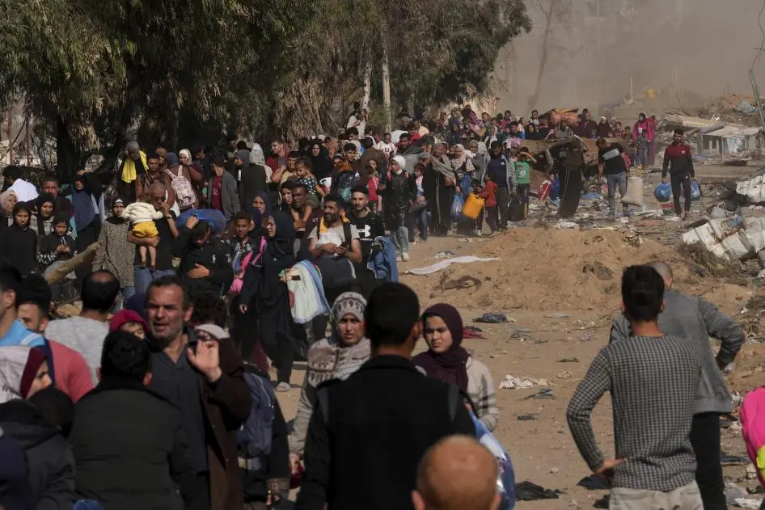

Suffering of People in Gaza

The Fear of Losing Lives
Every single day, the people of Gaza live under the constant threat of airstrikes, bombings, and sudden destruction. Children scream in fear during the night, uncertain if they will survive until morning. Sirens pierce the silence, homes are flattened in seconds, and the idea of safety has become a memory. There is no warning, no mercy, and no peace. The trauma carved into their hearts will echo for generations. What was once a routine life has become a terrifying waiting game between survival and sorrow.

Sadness of Losing Loved Ones
Grief has consumed Gaza. People have watched helplessly as their fathers, mothers, siblings, and children were taken from them in moments. The pain of burying loved ones day after day has become unbearable. Entire families vanish beneath the rubble, while others weep beside freshly dug graves. Funerals have outnumbered celebrations, and tears have become a constant companion. As one resident put it: "We buried my brother yesterday, and today we are searching for my cousin under the debris."

Lack of Food and Clean Water
Basic human needs such as food and clean water have become luxuries. People stand in endless lines hoping to find a loaf of bread. Children drink from contaminated sources because there are no alternatives. Markets are empty, refrigerators are useless due to power outages, and hunger haunts every household.
- Markets are empty
- Refrigerators don’t work due to constant power outages
- Children drink unsafe water
- People wait for hours just to get bread
The world watches as Gaza starves. Survival is no longer about living — it's about finding one more meal for the day.

Forced Displacement
Nowhere is safe. Families are pushed out of their homes repeatedly, running from bombed neighborhoods to overcrowded shelters.
- Schools turned into shelters
- Mosques repurposed as emergency housing
- Public buildings overcrowded with displaced families
- No access to medical care or hygiene supplies
- Privacy and comfort are no longer possible
Schools, mosques, and public buildings have become temporary homes lacking the most basic needs. Privacy is gone, comfort is a dream, and medical care is unavailable.
- Mother is sent to one shelter
- Father ends up in another
- Children are lost or taken elsewhere
This isn’t just displacement; it’s the collapse of home, stability, and identity.
Thousands March in Support of Palestinians on Sydney Harbour Bridge
Solidarity for Gaza is being felt around the world. Thousands of people gathered on Sydney's iconic Harbour Bridge to march in support of Palestinians, raising flags, chanting for justice, and calling for an end to the suffering in Gaza. The peaceful demonstration sent a powerful message to global leaders, showing that the cries of the oppressed are heard far beyond the borders of Palestine. This united front of compassion and activism highlights the growing international demand for accountability and peace.